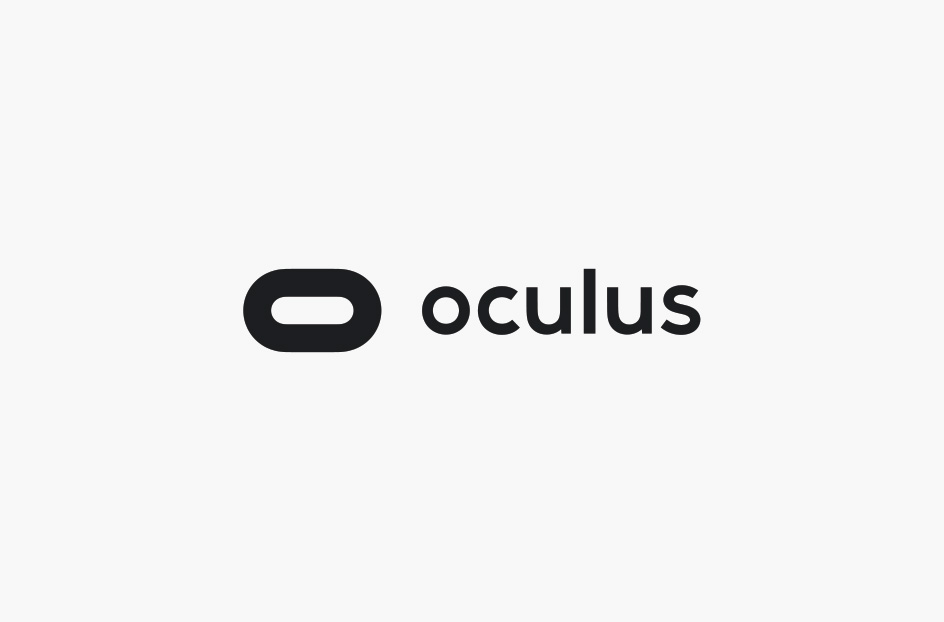
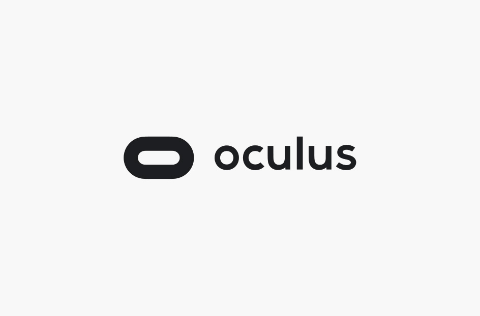
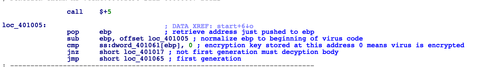
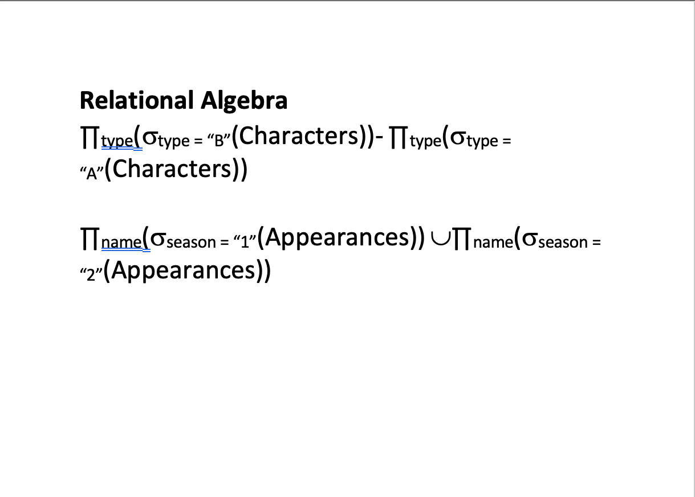
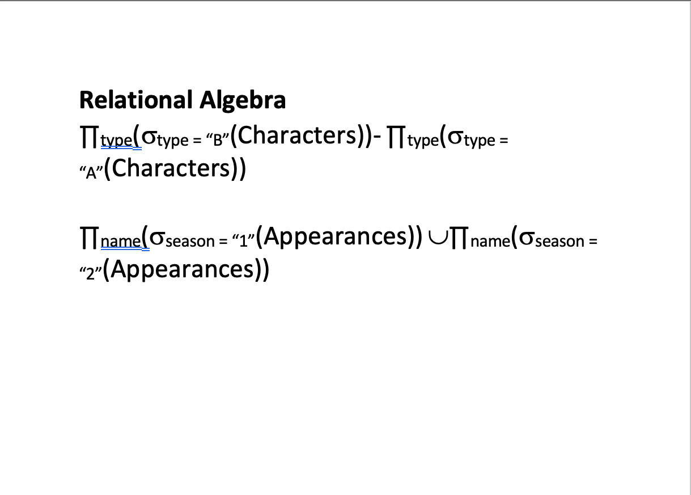

Current Role: Cyber Security Analyst
Github
I officially began using Python to program during my fall semester of College in 2018.
Relevant Coursework: CSC Programming languages, ISDS Intro to Python


Started college learning how to program using Java in 2015.

Abstraction Only essential details are displayed to the user(Only focusing on the important stuff). Identifying only the required characteristics of a class. In java it is achieved by interfaces and abstraction classes.
If you are going to have abstract methods you need to have an abstract class, but you can have an abstract class without the methods.
Encapsulation Is data hiding and Abstraction is detail hiding.
Encapsulation Wrapping up data under a single unit. Prevents data from being used by code outside the shield. DATA-HIDING. Make all the variables private and then use public methods to set and get the values of the variables. Increases flexibility because the variables can be made read-only or write-only.
Generics Allow types such as Integers, Strings, ect be a parameter to methods, classes, interfaces. Hashset, ArrayList, HashMap uses them.
Primitives Data types Because Java is statically-typed it requires all variables to be declared before they can be used. Int, byte, short, Float..
Static A keyword. A member(method) can be accessed before an object of its class is created.
Protected An Access Modifier: Helps control access to members of a class
Switch multi-level branch statement. Provides easy way to dispatch execution to different parts of code based on the value of the expression. Has cases.
Try Defines a block of code to be tested for errors
Catch Define a block of code to be executed if there was an error in the try block.
If Statements Most basic control flow statement. The code is executed if the test evaluated is true.
Else Statements Provides a secondary path if the executed clause evaluates to false.
Public Vs. Private Private(method, variable) is limited to the class only.
Polymorphism When a parent classes is used to refer to a child class. The only way to access an object is through a reference variable. All java objects are polymorphic. Once declared, the type of a reference can not be changed. A class is polymorphic if it has multiple inheritance. A child class can override a method in a the parent class. Overriden method is hidden from the parent and is not invoked unless the super word is used.
Virtual Method Invocation When compiled, uses the method from the referenced class to verify the method but invokes the method of the class it points to(after the key word new).
Inheritance One class inherit the features(Fields and methods of another) Super Class, Sub Class, and Reusability
Extends Keyword. Is for extending a class. Have to override methods.
Implements Is for implementing an interface(method that has been created, but know defined)
Overloading Methods Methods within a class can have the same name if they have different parameter lists
Variables Have to be declared and then initialized (given some value.)
During my sophomore year of college, I completed a 48hr game jam with my 5 other teammates. I took CSC Video game design my senior year and presented an indiviual game and a group video Game.
 


In this game the main character, son of a king, has been confronted by this father. His father expressed his concerns about his son's mental strength. The main character goes to sleep and has a dream that prevents him from waking up until he learns to believe in himself.
This is a full campaign virtal reality game. Developed by myself and five other indiviuals. I was the leader of storyboarding and testing.
Relevant Coursework: CSC Operating Systems, CSC Intro Cyber Security, CSC Reverse Engineering and Malware Analysis


The image below is my class work reverse Engineering a virus in Ida Pro

Confidentiality: the state of keeping or being kept secret or private.
Integrity: the quality of being honest and having strong moral principles; moral uprightness.
Accountability Having the information available
Authentication: the process or action of proving or showing something to be true, genuine, or valid.
Authorization:
specifying access rights/privileges to resources
Unicast: transmission/stream sends IP packets to a single recipient on a network. Multicast: transmission sends IP packets to a group of hosts on a network. Common network based services: Directory services. e-Mail. File sharing. Instant messaging. Online game. Printing. File server. Voice over IP.
My CSC Object Oriented Design group developed an app that was placed on the App Store. I created an imessage sticker application for fun. My friend and I have been working on developing an AR application for some time now: Vision713

iOS message sticker application
This app allowed users to get real-time information on Tigerland Bars in Baton Rouge.
Take a picture with Houston themed 3-D objecs!
I began using databases during my sophomore year of college for an iOS application. During more senior year I
began learning more about database management and programming in SQL
Relevant Coursework: ISDS Database Management, CSC Database


 

This ER diagram shows 5 attributes and their relationships with one another. Below the diagrams is the Relational Data Model. The Primary keys and bolded and the foriegn keys are italicized.
Attribute Closure F = {TY → S, S → P, S → A}
What is a Database and what is a database management system? A shared collection of logically related data and its descriptions. It is designed to meet the information needs of an organization.
What is a relationship? Relationships specify the type of association between entities.
What is the definition of a foreign key? A column that is a primary key of another table.
What is referential integrity constraint?For every value of a foreign key there is a primary key in another table with that value. A primary key must exist before the foreign key can be defined.
What are the four important features of Data Warehousing? Sub-Oriented Data, Integrated Data, Time Variant Data, Non-Volatile Data
ELT To move data on operational data source to centralized data warehousing system, the data destined for an Enterprise Data Warehouses (EDW) must first be (1) extracted from one or more data sources, (2) Transformed into a form that is easy to analyze and consistent with data already in the warehouse, and then finally (3) Loaded into EDW.
What is database security? The mechanisms that protect the database against intentional or accidental threats.
Four tasks that are associated with data administration: Authorization, Access controls, Views, Backup and recovery
Boyce Codd Normal Form (BCNF)
First Normal Form: The domain has to be atomic.
Second Normal Form: Have to be in first normal for and remove all partial dependencies. Fuctional Dependency: Require that the value for a certain set of attributes determines uniquely the value for another set of attributes.
Third Normal Form: Remove transitive dependencies by moving them to a new table and creating a foriegn key to reference that table.
Armstrong’s Axioms: reflexivity, augmentation, transitivity
1. Binary Search Trees Goal: Search for an item in an array. Method: Divide and conquer. First find the middle element. IF the key is (==) to the middle then that is the answer. IF the key is greater then just worry about the upper portion of the arry and if the key is lower then just worry about the lower half. The time complexity is O(log n)
I have been using photoshop to create art and flyers since 2011.